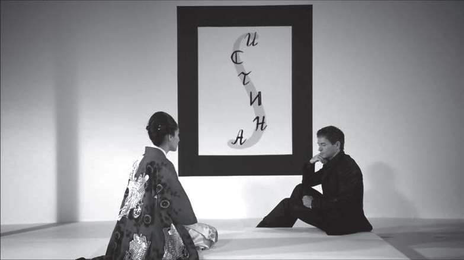
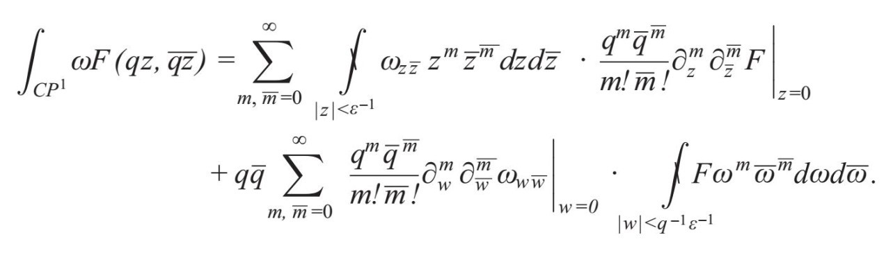
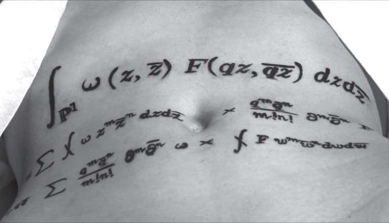

2008年，我获得了巴黎数学基金会（Fondation Sciences Mathématiques de Paris）刚刚设立不久的Chaire d’ Excellence奖，并应邀去巴黎从事研究工作，以及通过演讲介绍我的研究成果。
巴黎是全球的数学中心之一，也是电影之都。身处这样的环境之中，我萌生了一个念头，想要拍摄一部介绍数学的电影。通俗电影往往会把数学家塑造成几近精神错乱、与社会格格不入的怪人，让观众觉得数学是一门与现实毫不相干、枯燥无味的学科。有谁愿意终其一生从事一项毫无现实意义的工作呢？
2008年12月，在我回到伯克利之后，决定开发我的艺术天赋。我的邻居托马斯·法贝尔（Thomas Farber）是一位优秀的作家，在加州大学伯克利分校教授创意写作课程。我问他：“我们能不能写一个介绍作家与数学家的剧本呢？”汤姆非常喜欢这个创意，他提出我们可以去法国南部，坐在沙滩上完成这个剧本。我们把剧本的开头确定下来：在一个阳光灿烂的日子，一位作家和一位数学家坐在沙滩上的露天咖啡馆的两张相邻的桌子旁。周围的环境十分优美，他们觉得很愉悦，并交流起来。接下来会发生什么呢？
这项工作跟我以前与数学家或物理学家的合作研究有些相似，但又有所不同：我们反复斟酌，用合适的词句描述人物的情感与心理活动，一步步地进入故事的核心。与我在数学研究中习以为常的整体框架相比，剧本的写作过程灵活多变，限制性要小得多。就这样，我与我尊重与崇拜的作家并肩战斗，开始了我们的合作。幸运的是，汤姆从来不将他的意志强加于我，而是通过平等的交流，让我能充分发挥自己的写作才能。我的几位导师将我带进了数学世界，汤姆则帮助我走进了写作的殿堂，我一直对他心怀感激。
在剧本中，有一次那位数学家跟作家谈到了“二体问题”（two-body problem）。这个问题是指两个对象（实体），例如恒星与行星，仅仅与对方发生相互作用（我们忽略发生在它们身上的其他作用力）。只要知道它们彼此间的吸引力，我们就可以用一个简单的数学公式，准确地预测它们未来的运动轨迹。不过，如果这两个实体是人体，例如一对情人或好友，他们的相互作用就要复杂得多。在这种情况下，即使二体问题有解，那也不会是唯一解。
我们的剧本讨论的是现实世界与抽象世界之间的碰撞：身为作家的理查德看到的是文学与艺术的世界，身为数学家的菲利普看到的则是自然科学与数学的世界。在各自擅长的抽象领域，两人都如鱼得水，但是两人的这种碰撞对现实世界会产生哪些影响呢？菲利普试图一分为二地看待这个问题，想要在他擅长的数学真理与不擅长的人文真理之间取得平衡。他知道，如果把生活中遇到的问题也当作数学问题来处理，有可能会徒劳无功。
我和汤姆也经常思考一个问题：通过讲述这两个人的故事，我们能看到艺术与科学[查尔斯·斯诺（Charles Snow）称之为“两种文化”]之间的异同吗？事实上，我们可以认为这部电影是在类比人类的左脑和右脑。它们是同时存在于一个大脑中的两种“文化”，两者相互竞争又相互扶持。
在剧本中，两个角色还交流了他们的情感经历：他们是如何找到又失去真爱的，他们经历了哪些撕心裂肺的事。在这一天，他们也邂逅了几名女性，这两个家伙把对自己职业的热情当作吸引异性的工具。他们在很多方面志同道合，但矛盾也悄然而至，并且最终产生出了一个令人意想不到的结果。
我们把这个剧本命名为“二体问题”，它成书出版，之后由获奖导演芭芭拉·奥利弗（Barbara Oliver）执导排成戏剧，在伯克利剧院上演。这是我第一次涉足艺术领域，看到观众们的反应，我感到既惊诧又好笑。比如，大多数人认为剧本中发生在那位数学家身上的事实际上就是我的经历。当然，《二体问题》中有很多情节的确来源于真实生活，例如，我在巴黎有一个俄罗斯女友，剧本中为菲利普的女友娜塔莉娅设计的很多显著特点，正是受到我女朋友特点的启发。剧本中有的情节来源于我的生活，有的则是源自汤姆的真实经历。不过，剧作者创作剧本的最大动机，就是塑造出性格鲜明的人物，设计出引人入胜的情节。在我和汤姆确定了目标之后，我们必须以某种方式来塑造这些人物。我们从真实生活中取材的那些体验，在经过润色加工之后，就再也不是我们自己的体验了。《二体问题》的主角就是剧中的角色，他们有自己的性格特征，这是艺术创作必须满足的一个要求。
* * *
我们开始寻找制片人，帮助我们把《二体问题》拍摄成标准长度的正片。我当时认为，片子拍摄完成后最好先在小范围内试映。2009年4月，我回到巴黎，继续完成Chaire d’Excellence奖的项目。这时候，我的一个朋友、数学家皮埃尔·沙比哈（Pierre Schapira）为我介绍了一位有才华的年轻导演瑞恩·格拉夫斯（Reine Graves）。瑞恩做过时装模特，也执导过好几部立意新颖、风格大胆的短片（其中有一部还在巴黎的限制级电影节上赢得了帕索里尼奖）。在皮埃尔的安排下，我和瑞恩共进了午餐。席间，我提议我们俩合作拍摄一部介绍数学的短片，瑞恩欣然接受了我的提议。很显然，我们一拍即合。几个月之后，有人问她为什么接受我的提议，瑞恩回答说，在当今世界，人们的热情差不多消耗殆尽，而数学王国是尚能发掘出诚挚激情的为数不多的领域之一。
我们开始想各种各样的创意。我拿出几张以前拍摄的照片给瑞恩看，在这些照片上，我（用数字方式）在人体上绘制了一些数学公式的文身。瑞恩一看就非常喜欢，于是，我们决定把公式文身这个素材放到电影中。
文身这种艺术形式源自日本。我去过日本十几次（那时，费金夏天在京都大学任教，我去那里与他一起研究数学问题），日本文化让我深深着迷。为此，我和瑞恩跑到日本的电影院寻求灵感。在我们观看的电影中，有一部名叫“忧国”，由日本著名作家三岛由纪夫（Yukio Mishima）根据自己的短篇小说改编，且由他本人执导并担纲主演。
这是一部黑白片，并不是很长，在具有典型日本能乐风格的简朴舞台上上演。电影中没有对白，但是选取了瓦格纳的歌剧《特里斯坦与伊索尔德》中的音乐作为背景音乐。电影中有两个角色，一个是皇家卫队的年轻军官竹山中尉，另一个是他的妻子玲子。这名军官的朋友发起了一场政变，结果却失败了。中尉接到将作乱者处死的命令，但他无法执行这条命令，因为这些作乱者都是他的好朋友。可是，他也无法违背天皇的命令。于是，他唯一的选择就是切腹自杀。
尽管这部电影的时长只有29分钟，但却深深地打动了我。我认为三岛由纪夫的电影创作方式力量感十足，毫不掩饰地直指问题的核心。人们可能不认同他的思想（事实上，在我看来，他对爱与死亡之间的微妙关系的认识缺乏感染力），但是作为电影创作者，他毫不妥协的态度赢得了我的尊重。
三岛由纪夫打破了电影的传统表现方式：这是一部无声电影，在各个“章节”之间有书面文字解说后续情节。这部电影非常适合舞台表演，演员的动作不多，但各个场景都经过精心编排。不过，让我为之心动的却是其中情感的无声宣泄。（当时，我还不知道三岛由纪夫本人也是切腹自杀的，与电影情节诡异地相似。）
这部电影引起了我强烈的共鸣，也许是因为我和瑞恩也想制作一部打破传统的电影，以一种全新的方式介绍数学。我觉得三岛由纪夫使用的电影框架与语言充满了美感，这正是我们苦苦追寻的目标，因此，我给瑞恩打了一个电话。
“我看了三岛由纪夫的电影，”我说，“真是太棒了。我们的电影也应该拍成那样。”
“好的，”她说，“那我们选择什么主题呢？”
突然之间，我的思路变得异常清晰，一连串想法脱口而出。
“一位数学家创建了爱的公式，”我说，“但他却发现这个公式是一柄双刃剑：它既可以用来行善，又可以用来作恶。他意识到这个公式必须妥善保管，以免落入坏人手中，于是他决定把它文到他深爱的女人身上。”
“非常好。你觉得电影的名字叫什么好呢？”
“嗯……叫《爱与数学之祭》，怎么样？”
就这样，我们确定了这部电影的创意。
在我们的设想中，这部电影就是一个寓言，告诉人们数学公式与诗歌、绘画和音乐一样，也富有美感。我们不奢望它能冲击观众的大脑，而是希望触及他们的直觉与本能；我们不奢望观众能够理解这些数学公式，而是希望让他们在第一时间去感受这些公式。我们认为，强调数学中人文与精神层面的内容，有助于激发观众的好奇心。
在人们看来，数学与自然科学总的说来是两个枯燥乏味的领域。但实际上，创建新的数学知识与艺术及音乐创作一样，是一个激情四射的求索过程，也是一种个性十足的体验。如果缺乏热情，没有奉献精神，是无法实现目标的。这是与未知世界的斗争，也是与自我的斗争，能激发你强烈的情感。而且，你发现数学公式可以触及你的灵魂，就像电影里的文身会深深嵌入人的皮肤一样。
在我们这部电影中，一位数学家发现了“爱的公式”。当然，所谓“爱的公式”，其实是在隐喻我们想要追求终极真理，想要洞察世界的一切。在现实世界中，我们必须勉强接受一知半解。但是，如果真的有人能发现终极真理呢？如果终极真理真的可以用数学公式表现出来呢？我想，这个终极真理就是电影里的爱的公式。
亨利·戴维·梭罗说过一句很妙的话：
对于任何真理，如果想要用最明确、最优美的语句来表述它，就得借助数学语言。我们有可能对算术规则乃至道德哲学规则进行简化，用一个数学公式同时表示这两种内容。
即使数学公式并不足以表现世间万物，但总的来说，数学公式仍然是表现人类已知真理的最纯粹、适用面最广也是最经济的表达方式。它们不会人云亦云，而是忠实地向所有人传递永恒、珍贵的知识，而且，它们是一座座巍峨挺拔的现实之塔，所表达的都是人类必需的真理，引导着人类走过时空的征程。
亨利希·赫兹（Heinrich Hertz）对数学公式充满了敬畏：“人们会情不自禁地认为这些数学公式是一种独立的存在，拥有灵性，比人类聪明，甚至比建立这些公式的人聪明。”赫兹证明了电磁波的存在，因此人们用他的名字来命名频率单位。
有这种感受的人远不止赫兹一人，数学界的大多数人都认为数学公式与数学思想存在于一个独立的世界之中。罗伯特·朗兰兹认为数学“常常以暗示的形式悄然而至，这说明数学的全部内容（而不仅仅是其中的基本概念）都独立于我们之外而存在。这样的认识很难理解，但是，如果专业数学研究者没有形成这种认识，就会寸步难行”。著名数学家尤里·曼宁（德林费尔德的导师）也有类似的感受，他说：“虔诚谦恭、痴心不改的数学家发现（而不是创造），在柏拉图所谓的“思想世界”的某个地方，巍然矗立着一座气势雄伟的数学城堡。”
从这个意义上讲，伽罗瓦群是由这位法国天才发现的，而不是由他创建的。在他发现之前，这个概念已经存在于数学这个思想世界的魔幻花园中，等着人们去探索。即使伽罗瓦的那些论文丢失了，即使他没有因为这项发现而获得应有的荣誉，这些群也将会被其他人发现。
在人类辛勤耕耘的其他领域，情况则有所不同。如果乔布斯没有回到苹果公司，我们可能就不会用上iPod（苹果便携式多功能数字多媒体播放器）、iPhone（苹果智能手机）和iPad（苹果平板电脑）。也许苹果公司会完成其他的技术创新，但是我们没有理由期望其他人也能创造出跟乔布斯完全相同的产品。但是，数学真理则不同，它们是一种必然的存在。
希腊哲学家柏拉图首先提出，数学中的一项项内容与我们的理性活动没有任何联系，因此，数学概念与数学思想栖身的这个世界，通常被称为“柏拉图数学世界”。数学物理学家罗杰·彭罗斯（Roger Penrose）在他的专著《通往现实之路》（The Road to Reality）中宣称，柏拉图数学世界中的数学命题“都是客观真实的命题。如果人们说某个数学命题存在于柏拉图数学世界中，就意味着该命题是客观真实的。”同理，数学观念也“存在于柏拉图数学世界中，因为它们是客观的”。
同彭罗斯一样，我也认为柏拉图数学世界与物理世界及精神世界有所不同。比如，我们可以想一想费马大定理。彭罗斯在他的书中反问道：“我们会认为在费马提出这个命题之前它就是一个客观真实的命题，还是认为该命题的真实性是个纯粹的文化问题，且取决于数学界的主观标准呢？”借助归谬法这个经受住了时间考验的传统证明工具，彭罗斯指出，如果引入主观解读，就会导致大量“明显荒谬”的命题，以此强调数学知识是独立于人类所有活动之外的客观存在。
库尔特·哥德尔直言不讳地赞成这个观点。哥德尔的研究成果，尤其是著名的“哥德尔不完全性定理”（Gödel’s incompleteness theory），从根本上改变了数学的逻辑。他认为数学概念“是客观现实，我们只能认知、描述，但却无法创建或改变这些客观现实”。换言之，“数学描述的是非感官现实，是一种独立存在，与人类的意识与意向无关。人类的意识只能认知这种非感官现实，而且这种认知有可能很不全面”。
柏拉图数学世界与物理现实也没有关联。例如，我们在第16章讨论过，规范场论这个工具最初是由数学家提出来的，他们没有参考任何物理知识。然而，事实证明，这些模型描述了自然界中的三个已知作用力（电磁力、弱作用力和强作用力）。这三种作用力分别对应三个具体的李群[循环群、SU(2)群和SU(3)群]，尽管也存在可对应所有李群的规范场论。与其他李群（不包括上述三个李群）相关的规范场论都具有明显的数学特征，而且人们尚未发现这些规范场论与现实世界存在任何联系。此外，我们还讨论过这些规范场论的超对称扩展结构。尽管人们没有在自然界中发现超对称性，而且自然界中很有可能并不存在超对称性，但是，我们依然可以利用数学工具来分析这些超对称扩展结构。维数不是4的类似模型，在时空中也具有数学意义。这种与物理现实没有任何直接联系，但是内涵丰富的数学理论有很多，简直不胜枚举。
罗杰·彭罗斯在其著作《意识的阴影》（Shadows of the Mind）中讨论了物理世界、精神世界与柏拉图数学世界三者之间的关系。这三个世界彼此独立，但又紧密地交织在一起。我们仍然无法彻底了解它们之间的联系，但显而易见的是，这三个世界都会对我们的生活产生深远的影响。不过，尽管我们已经认识到物理世界与精神世界对人类的重要意义，但仍有很多人根本不了解数学世界（对他们来说，这未尝不是一件幸事）。我相信，等到我们对这个隐藏的现实有所认识，并发掘出其尘封多年的能力时，产业革命留给我们这个社会的既定秩序就会发生改变。
在我看来，数学知识的客观性是产生无限可能的源泉，也是区别于人类其他行为的根本特性。我觉得，了解这个特性背后的秘密，有助于我们彻底了解物理现实、意识及两者之间的相互关系。换句话说，我们越接近柏拉图数学世界，我们了解周围世界以及我们在这个世界中所处位置的能力就越强。
值得庆幸的是，我们深入了解柏拉图数学世界，并在生活中对其加以应用的进程是不可阻挡的，其中一个非常重要的原因就是数学的内在民主性。对于物理世界和精神世界而言，不同的人在认知或解读其中的某些内容时可能会得出不同的结论，有的人甚至根本无法理解。但是，所有人对数学概念与方程式的认知都会得出相同的结论，而且数学给予人们的机会是均等的。没有人可以垄断数学知识，人们既不能宣布某个数学公式或数学思想是自己发明的，也不能为某个公式申请专利。比如，爱因斯坦不能为自己提出的公式E=mc2注册专利。原因在于，如果这个公式是正确的，那么它所表示的是宇宙的某个永恒真理，因此不可能私有化，只能由大家共享。无论贫富、肤色与年龄，谁也不能把它从我们手中夺走。在这个世界上，再也没有其他任何事物能像数学那样深奥、典雅而又不属于某个人的了。
* * *
电影《爱与数学之祭》模仿三岛由纪夫电影的艺术风格，画面中心位置的装饰品是一幅挂在墙上的大件书法作品，显得非常朴实。在三岛由纪夫的电影中，该书法作品上书写的是shisei（真诚），因为那部电影的主题是真诚与荣誉。
而我们选择的电影主题是真理，因此我们计划在这件书法作品上写上“真理”。不过，我们不是用日语书写，而是用俄语。
“真理”一词在俄语中可用两个词来表示。其中更常见的一个词是“Pravda”，指与事实有关；另外一个词是“istina”，意为更深层次、哲学意义上的真理。例如，“圆桌对称群是一个圆”这句话是“Pravda”，而朗兰兹纲领（在经过证明之后）就是“istina”。很明显，电影中的那位数学家为之献身的真理是“istina”。

在我们这部电影中，我们希望探讨数学知识的道德意义：一个非常重要的公式也有可能会产生负面作用，被居心叵测的人利用。我们以20世纪初的一群理论物理学家为例。这些物理学家一心想了解原子的结构，结果，在一场他们看来纯粹是高尚的科学探索活动中，他们无意间发现了原子能。原子能在为人类做出很多有益贡献的同时，也给人类带来了破坏与死亡。同样，我们在知识求索过程中发现的数学公式也有可能对人类造成伤害。尽管科学家拥有开展科学探索的自由，但是我认为他们也应该承担相应的责任，尽可能地避免自己发现的公式被居心叵测的人利用。在我们这部电影中，那位数学家宁愿放弃自己的生命，也要保护公式不落入坏人之手——文身是他能想到的既可以把公式隐藏好又可以保证公式不遗失的一个方法。
由于我从来没有文过身，因此我必须了解文身的各个程序。如今，人们可以利用机器来文身，但是在历史上（在日本），文身是用一根竹棒制作出来的，耗时更长，也让人更痛苦。有人告诉我，日本现在可能还有使用这种古老技术的文身店，我们在电影中展现的正是这种古老的技术。
电影中要用到的“爱的公式”到底应该选择哪一个呢？这是一个非常重要的问题。这个公式必须足够复杂（毕竟，这是爱的公式），同时，它还应该具有美感，看到它人们便觉得赏心悦目。我们希望向观众表明，数学公式既有内在美，又有形式美。同时，我还希望选用我自己建立的公式。
经过艰苦的“海选”，我选择了下面这个公式：

该公式选自我和我的两位朋友安德烈·罗瑟夫（Andrey Losev）、尼基塔·涅克拉索夫（Nikita Nekrasov）于2006年合作完成的论文“超越拓扑理论的瞬子第一篇”（Instantons Beyond Topoloical Theory I）。这篇论文长达100页，上述公式是论文中列出的公式（5.7）。
这个公式看上去令人生畏。如果我在电影中把这个公式写到黑板上，并解释其中的含义，那么大部分观众可能会立刻离场。但是，当它以文身的形式出现后，就会引起截然不同的反应。这个公式似乎真的可以触及观众的灵魂，大家都希望了解其中的含义。
这个公式到底有什么含义呢？当时，我们写了一系列论文，讨论借助“瞬子”研究量子场论的新方法，这篇论文是该系列论文的第一篇。瞬子是有显著特点的量子场结构。尽管量子场论可以准确地描述基本粒子间的相互作用，但是无法准确地解释众多重要现象。例如，根据标准模型，质子和中子由三个不可分的夸克构成。在物理学中，这种现象被称为限制作用。但是，其作用原理一直没有合理的解释，很多物理学家相信瞬子是打开这道门的钥匙。不过，在传统的量子场论中，瞬子并不容易理解。
因此，我们提出了一个研究量子场论的新方法，以便更好地理解瞬子的作用。在研究其中一个理论时，我们采用了两种不同的方法去计算它的相关函数。结果，上述公式表明，这两个方法表现出令人吃惊的一致性。当时，我们并不知道这个公式很快就要在电影中扮演“爱的公式”这个角色。
我们的特效师欧丽安·吉劳德（Oriane Giraud）非常喜欢这个公式，但她觉得要是把这个公式制作成文身就太复杂了。于是，我简化了这个公式，最终在电影中它呈现为下图所示的样子（见下页）。
在电影中加入文身的镜头是为了表现数学研究中的激情。在制作文身时，这位数学家全神贯注，把整个世界都抛在脑后。对他而言，这个公式就是他的生命的全部意义所在。

我们下了很大功夫才完成这组镜头的拍摄。全剧组约30个人通力合作，花了一整天时间，到接近午夜时才完成拍摄。我与扮演真理子的女演员凯伊肖恩·梅（Kayshonne May）真的感到身心俱疲。但是，整个剧组成员都欢欣鼓舞、情绪激动。
* * *
2010年4月，在巴黎自然科学与数学基金会的资助下，电影的首映式在麦克斯·林戴电影院（Max Linder Panorama Theater）举行。这是巴黎最好的电影院之一，首映式也非常成功。各类杂志开始刊登第一波影评，法国《世界报》评价《爱与数学之祭》是“一部极有震撼力的短片，非比寻常地用一种浪漫的眼光去观察数学家的世界”。《新科学家》也评论道：
这是一部非常优秀的电影……如果弗伦克尔的目的是让更多的人了解数学、学习数学，那么他已经如愿以偿了，因为这部电影极有感染力。电影中的“爱的公式”，实际上是一个方程式的简化版，该方程式引自他于2006年发表的一篇题为“超越拓扑理论的瞬子第一篇”的量子场论论文。将其拍成电影之后，有机会看到（即便不能理解）这个公式的人可能会大大增加。
法国流行杂志Tangente Sup认为，这部电影“将激起那些认为数学与艺术及诗歌是从根本上对立的人的兴趣”。这篇文章还引用了赫尔夫·莱宁（Hervé Lehning）的一段话：
对称性与对偶性是爱德华·弗伦克尔数学研究中的重要内容。这些内容与朗兰兹纲领有关，目的是在数论与某些群之间建立联系。这个研究主题非常抽象，但它在实际生活中也有应用，比如密码学……如果说对偶性在爱德华·弗伦克尔的研究中具有如此重要的意义，我们不免会想到一个问题。在爱与数学之间，是否也像电影名字暗示的那样，存在某种对偶关系呢？他的答案非常明确，他认为数学研究的目的就是揭示爱的奥秘。
随后，这部电影在世界各地的电影节上映，其中包括加利福尼亚、巴黎、京都、马德里、圣芭芭拉、毕尔巴鄂、威尼斯……电影公开上映后，我得以观察“两种文化”之间的某些差异。我首先感受到的是文化冲击。在全世界范围内，能够完全理解我的数学研究的人很少，起初只有十几个人。其次，每个数学公式表现的都是一个客观真理，从本质上看，这个真理应该只有一种正确的解读，大家对我的数学研究成果的解读也是一个样。而我们这部电影的观众很多，有成千上万的人，他们都会以自己的方式去理解。
因此，我的理解是，观众必然是艺术创作的一个部分，艺术创作的最后成果也要接受他们的评判。创作者没有改变观众感知的特权，当然，我们在分享观点时也能充实自己，从中获益。
在电影中，我们借助艺术家的感性来讨论理性的数学，以期使这两种文化融为一体。在电影的开头，真理子给这位数学家写了一首情诗。而在电影的结尾，这位数学家在真理子的身上文了一个数学公式，这是他对那首情诗的回馈。因为在这位数学家的心中，这个公式表现的就是爱。公式可以承载情诗所表达的那种激情与感性，我们正是利用这一点来表现数学与诗歌之间的相似性。对于这位数学家而言，这个公式是他的创造性成果，是激情与想象力的产物，是一份爱的礼物，是他写给她的一封情书。大家还记得吧，年轻的伽罗瓦在死亡决斗的前夜写下了他的那些方程式。
但是，她又是谁呢？在我们臆想出来的那个神秘世界中，她就是数学真理的化身[这也是我们把她的名字定为“Mariko”（真理子）的原因，这个词在日语中是“真理”的意思。同时，这也是墙上那幅书法作品上有“istina”字样的原因]。那位数学家对她的爱慕之情代表着他对数学和真理的热爱，表示他愿意为数学、为真理奉献出自己的生命。但是她不能死，因为她身上有他文上的公式，因为她要抚养她与数学家的孩子，因为数学真理是不朽的真理。
* * *
数学可以被视为爱的语言吗？一些观众无法接受“爱的公式”这个概念。有的人在看完电影后对我说：“逻辑与感情有时候会相互排斥，所以我们才会说爱是盲目的。怎么可能有爱的公式呢？”的确，我们经常会觉得情感是不理性的（不过，认知科学家认为，这种非理性的某些方面，其实可以通过数学来描述）。因此，我也认为，我们无法通过公式来描述或解释爱。我讨论爱与数学的联系，并不表示爱可以与数学相提并论，而是要告诉大家数学的内涵远比我们想象的要丰富。至少，数学可以为我们的爱提供理论依据，让我们彼此之间的爱、对周围世界的爱更深刻，也更强烈。
诗人诺玛·法贝尔（Norma Farber）给我们留下了一句很美妙的诗：
不要让我在爱河里懈怠……
让我一次又一次地“触电”。
数学就是让我们“一次又一次地触电”的东西，原因在于数学具有某种精神力量，只不过这种力量隐藏得很深，人们几乎很少使用它。
爱因斯坦说：“每一个认真探索科学知识的人都相信，宇宙的法则中明显包含着某种精神力量，这种精神力量远胜于我们人类拥有的精神力量，在它面前，我们的能力显得十分有限。”牛顿说：“我觉得自己就像一个在海滩上玩耍的孩子，偶尔捡到一块光滑的鹅卵石或一枚美丽的贝壳就乐不可支，但我却没有发现我面前的真理海洋，它正等待着人们去探索与发现。”
我希望有朝一日，我们每个人都能发现隐藏在数学中的这个事实。这样的话，我们就可以把分歧抛在脑后，专心致志地研究可以把我们联系在一起的那些深奥的真理。我们将像在海边玩耍的孩子那样，在发现令人炫目的美、感受到甜蜜温馨的和谐之后惊叹不已，我们也将分享和共同珍藏数学之美。